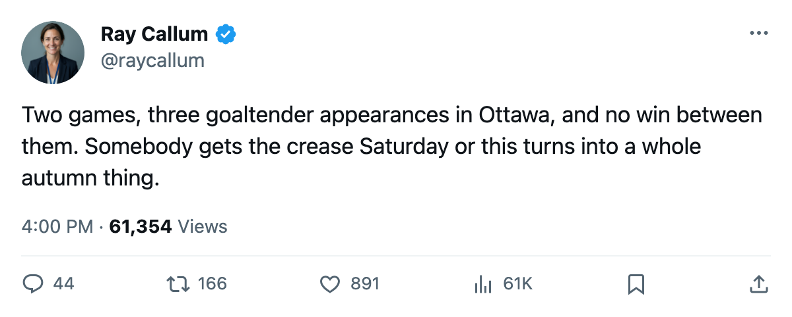
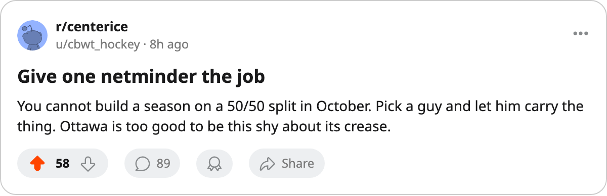

PHX
PHXGoalie Watch: 3 appearances, 2 games, and Ottawa still has no starter
The Senators used a goaltender in every frame of their 0-2 start, and neither Ray Emery nor Patrick Lalime can claim the crease yet.
 Ray CallumSenior correspondent · Home Ice Network
Ray CallumSenior correspondent · Home Ice Network
Ray Emery82 has played both of Ottawa's first two games.  Patrick Lalime88 has played one. That is 3 appearances across 2 games, and it means at least one Senators starter was pulled before the final horn.
Patrick Lalime88 has played one. That is 3 appearances across 2 games, and it means at least one Senators starter was pulled before the final horn.
 Ottawa Senators is 0-2-0 after the opening weekend, outscored 2-7, carrying a goal differential of -5 and last place in the Northeast. No club in the Eastern Conference has a worse mark. A crease that cannot settle on a man is one reason, and a two-goal attack in two games is the other. The goaltending question heads into Saturday's date with Phoenix.
Ottawa Senators is 0-2-0 after the opening weekend, outscored 2-7, carrying a goal differential of -5 and last place in the Northeast. No club in the Eastern Conference has a worse mark. A crease that cannot settle on a man is one reason, and a two-goal attack in two games is the other. The goaltending question heads into Saturday's date with Phoenix.
Emery took both games. Lalime came in for part of one of them, which makes the opening week a live competition. For a club that expects to push up the standings, a half-and-half split is a problem.
The fix is easy to name and hard to do: pick a man on Saturday and leave him there. Emery or Lalime, one netminder, and the rest of the week behind him. Ray Emery has logged 2 of 2, Patrick Lalime 1 of 2, and neither can point at a win. Ottawa has scored 2 goals in 2 games, the fewest of any team that has skated twice.
Phoenix arrives 0-1-0 with  Sean Burke88 between the pipes, and it gives Ottawa a chance to put one netminder's name on a win or keep the question open a little longer.
Sean Burke88 between the pipes, and it gives Ottawa a chance to put one netminder's name on a win or keep the question open a little longer.

